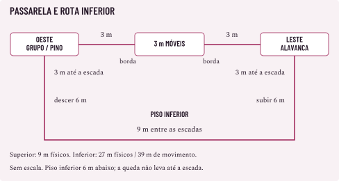

CONSULTA DO MESTRE
A passarela e o guincho
Perigo experimental da pré-1.0. Este caso mostra como anunciar um perigo que piora com o tempo e resolver as tentativas de detê-lo. Leia depois de O Carregador no depósito; aqui, o grupo enfrenta outra situação, sem inimigos. Use a ficha de encontro para anotar o perigo.
O dano de queda, os saltos, a escalada, as ações e os objetos vêm do Livro de Regras 1.0. O mecanismo, as posições e a ruptura após três rodadas são escolhas deste exemplo, ainda sujeitas à avaliação. Este exemplo não define dano de desabamento por nível.
O chamado
Durante a vistoria de uma oficina abandonada, a equipe precisa desligar um guincho defeituoso e impedir que alguém volte a usar uma passarela comprometida. A guilda pode ter recebido o chamado dos responsáveis pelo prédio. Em campanha fechada, a oficina pode pertencer a um contato do grupo. As pessoas comuns já evacuaram; a ocorrência não exige ficha de civil nem uma segunda ameaça escondida.
O guincho está ligado por engano ao suporte da parte móvel da passarela. Quando começa a puxar, pode arrancá-lo. Um freio independente segura o conjunto se essa ligação for interrompida. O grupo pode reconhecer esse funcionamento ao observar o mecanismo. Cortar um cabo que sustenta pessoas é outra coisa: o freio não torna esse corte seguro.
Há três resultados distintos: parar a tração, retirar quem estiver em risco e interditar a passagem. Parar o motor não conserta a estrutura. Se ela romper, ainda pode ser necessário desligar o equipamento e prestar socorro. Ao encerrar a missão, anote o resultado de cada tarefa. A passarela pode continuar inutilizada.
Confira as fichas reais: deslocamento, Força, meios de voo ou travessia, Reações de proteção contra queda, ferramentas, acesso a ataques contra objetos e socorro. O nível do grupo não indica, sozinho, a dificuldade desta situação. Se as fichas permitem resolvê-la depressa, deixe a solução funcionar.
O lugar e os caminhos
O lugar tem dois patamares firmes, Oeste e Leste, separados por um vão. Uma passarela liga suas bordas. Um piso inferior firme fica 6 m abaixo, iluminado e sem água, fogo ou máquinas sob a área de queda.
| Ponto ou percurso | Medida e uso |
|---|---|
| Grupo, na abertura | Patamar Oeste, a 3 m da borda; chão regular, fora da parte móvel. |
| Travessia superior | 3 m até a borda + 3 m de passarela + 3 m até a alavanca no Leste: 9 m. |
| Alavanca de parada | No Leste, em apoio firme; acessível com uma mão disponível. A posição final do percurso de 9 m já permite operá-la. |
| Ligação de transmissão | Pequeno pino de madeira, exposto num acoplamento junto da posição inicial do grupo. Pode ser atingido a até 1,5 m de um espaço firme no Oeste. Não é o suporte que sustenta pessoas. |
| Rota inferior | Da posição inicial: 3 m até escada Oeste; descer 6 m; andar 9 m pelo piso inferior; subir 6 m pela escada Leste; andar 3 m até a alavanca. 27 m físicos; 39 m de movimento com escalada comum. |
| Escadas | Fixas, com apoios utilizáveis, secas e firmes; cada uma tem largura para uma criatura Média por vez. Sem teste nas condições iniciais. |
| Áreas de chegada | Patamares com espaço livre para o grupo; o piso inferior permite alcançar a projeção da passarela pelas escadas. |
Use uma faixa de 3 m de largura para a passarela e indique os espaços que ficam sobre sua parte móvel. Marque os dois patamares como apoios estáveis. A ligação de transmissão fica ao lado do acesso, separada da passagem: quem a golpeia não precisa ficar sobre a passarela. As rotas superior e inferior são percursos diferentes, com entradas e saídas marcadas; não some suas distâncias como se todos tivessem de passar pelos mesmos pontos.

O esquema indica percursos, sem representar escala. A rota inferior passa ao redor da área sob o trecho móvel. Quem cai chega ao piso abaixo da passarela, não ao pé de uma escada. Marque onde a pessoa caiu e meça de onde cada socorrista precisa partir para alcançá-la.
Avise antes de ligar
Ao chegar à posição inicial, o grupo vê o guincho ainda parado, a ligação presa ao suporte e o comando de teste ao alcance. Uma placa indica o acionamento de teste e a alavanca de parada no outro lado. O grupo pode examinar o mecanismo, interditar o acesso ou romper a transmissão antes de ligá-lo. Não é obrigatório ativar o perigo para cumprir a missão.
Se alguém acionar o teste, informe antes que o cabo está ligado ao suporte e que há risco de arrancá-lo. A pessoa pode corrigir a declaração. Se seguir, o acionamento é uma manipulação simples, dentro dos limites de Sacar e guardar; resolva seu custo e posição. Inicie a ordem de turnos com o motor começando a tracionar e todos conscientes do ruído. Se o acionamento ocorreu fora do combate, não desconte uma rodada antes de todos entrarem na iniciativa.
Role iniciativa como no Livro de Regras 1.0 para organizar os participantes. A primeira rodada completa depois do acionamento é a rodada 1 do perigo. Todos recebem seu turno nela, inclusive quem acionou antes da iniciativa. Essa abertura foi escolhida para o exemplo e precisa ser anunciada. Se a máquina for ligada durante um combate, defina antes da ação como contar o prazo dali em diante, sem dar outro turno a quem a ligou.
Sem ativação, não há contagem secreta. O mestre não liga o motor por conta própria porque o grupo encontrou uma maneira segura de resolver o chamado.
Três rodadas até a ruptura
Use um marcador visível, de 0 a 3, apenas enquanto a transmissão estiver puxando o suporte. O marcador avança uma vez ao fim de cada rodada completa, depois dos turnos e efeitos de fim de turno, com uma única fase ambiental. Turnos extras, entidades, Reações e mudanças de narrador não o avançam novamente.
| Estado | Descreva e resolva |
|---|---|
| Ativação, marcador 0 | Cabo fica tenso e o suporte começa a mover. Diga: “Se continuar puxando, essa parte vai perder o apoio; vocês têm três rodadas completas para interromper ou sair dela.” A passarela ainda suporta a travessia. |
| Fim da rodada 1, marcador 1 | Um pino do suporte sai parcialmente; metal raspa. Sem dano, teste ou mudança de custo de movimento. Atualize o prazo: restam duas rodadas. |
| Fim da rodada 2, marcador 2 | A fixação restante se deforma. Avise que a ruptura ocorrerá no próximo avanço. Ainda não há dano nem queda. |
| Fim da rodada 3, marcador 3 | A parte móvel perde o apoio. Remova seus espaços de sustentação. Quem ainda depender deles cai os 6 m reais até o piso inferior. A ruptura acontece uma vez; não se repete por rodada. |
| Tração interrompida antes de 3 | Congele o marcador no valor atingido; não resolva a ruptura programada. O freio sustenta a posição restante. A passarela continua avariada e deve ser interditada. |
| Tração interrompida depois de 3 | O guincho para; o vão permanece aberto. Não reaparecem piso, apoio ou vítimas no patamar. |
Intervir no próprio turno da rodada 3 ainda pode impedir a ruptura, se a ação terminar antes da fase ambiental. Anuncie e resolva a fase separadamente, sem escondê-la entre ações. Não encerre a rodada antes de alguém jogar porque demorou na descrição.
Quando todos estiverem fora de risco e as escolhas imediatas acabarem, pode encerrar a iniciativa. Se o motor continuar ligado, resolva o tempo que ainda falta: sair da iniciativa não interrompe o mecanismo. Como cada rodada tem seis segundos, três rodadas completas representam 18 segundos neste exemplo. Não cronometre a fala dos jogadores pelo relógio real.
Como parar o perigo
As posições da alavanca, do pino, do apoio inferior e das escadas são visíveis. A tração e os sinais de ruptura são informações da descrição. Não cobre testes para descobrir essas saídas depois de tê-las apresentado.
Se houver dúvida sobre o funcionamento, uma pergunta concreta por Estudar, com Investigação CD 10, pode identificar o pino que transmite o esforço e a função do freio. Custa Padrão em combate; o teste resolve essa dúvida, sem fornecer controle à distância ou vantagem em todo ataque posterior. A CD é escolha local na escala do Livro de Regras 1.0. Falhar gasta a ação; a alavanca identificada e as rotas continuam conhecidas. Uma descrição evidente ou capacidade que garanta a informação dispensa o teste.
Desligar o guincho
Ao alcance da alavanca no Leste, com mão disponível, use Usar objeto, Ação Padrão, sem teste: é um comando firme e identificado, que exige puxar e sustentar até completar o desligamento. Esse custo de operação é definição do dispositivo neste cenário. Não é apenas recolher ou guardar um item.
Ao concluir, motor e tração param. Não cobra PE nem outra ação para o freio funcionar. Movimento restante continua disponível. Uma habilidade que manipule objetos à distância precisa permitir aquela tarefa, alcance, força e ação; conhecer a localização não basta.
Quebrar o pino
O pino de transmissão é uma pequena peça resistente de madeira: Defesa 14, 5 PV, sem RD adicional. Esses valores vêm da tabela de objetos. Use ataques permitidos pela ação, alcance e ferramenta capaz de danificá-lo. O objeto não Bloqueia. Crítico e propriedades da arma seguem suas regras. Estar em iniciativa sem inimigos não concede um ataque gratuito.
A zero PV, o pino deixa de transmitir a tração e o freio segura o conjunto. A intervenção encerra a contagem, embora o motor continue girando sem puxar o suporte. Ainda é preciso desligar o motor pela alavanca para deixá-lo seguro, mas ele já não ameaça arrancar o suporte.
Errar ou causar menos de 5 de dano não fornece outro ataque além dos que a ficha permitir. Conserve os PV restantes: danos efetivos de 2 e 3 em ocorrências sucessivas quebram a peça. Atributos, crítico e defesas aplicáveis são resolvidos normalmente; não use apenas o número natural do dado como dano.
Feitiços só podem atingir o objeto quando seu texto permitir. Ele ignora efeitos de mente ou alma e Veneno conforme o Livro de Regras 1.0; o tipo de dano de outra capacidade precisa ser adequado ao material. Cortar o cabo que realmente sustenta a passarela é outro alvo, com outra consequência física: não recebe o resultado seguro atribuído ao pino de transmissão. Se alguém propuser isso, esclareça a diferença antes do gasto.
Usar outro caminho
Pode-se usar a rota inferior, saltar inteiramente o vão entre apoios firmes ou empregar uma capacidade apropriada. Não force uma falha para fazer o mecanismo parecer mais perigoso.
As escadas fixas usam escalada comum: cada 1,5 m custa 3 m de movimento. Andar 15 m e escalar 12 m totaliza 39 m de movimento na rota inferior. Quem tem deslocamento de escalada usa o custo próprio dessa modalidade, conforme o Livro de Regras 1.0. Correr acrescenta metros, mas usa Padrão; se ela foi gasta, não sobra para puxar a alavanca naquele turno. A Bônus pode virar Movimento.
Saltar o vão de 3 m, de um apoio firme ao outro, pode dispensar teste: Força 0 já permite essa distância com os 3 m de impulso; sem impulso, Força 0 ou 1 chega só a 1,5 m, enquanto Força 2 chega a 3 m. Conte impulso e salto no Movimento. Com Força 1 sem impulso, a extensão de 1,5 m pode ser tentada com Atletismo CD 14. Se falhar apenas nesse esforço, alcança sua distância normal e cai por não encontrar apoio. Informe isso antes da rolagem. As bordas estáveis deste cenário são firmes e secas; não acrescente teste de equilíbrio oculto.
Um voo válido pode resolver a travessia, mas não transporta automaticamente aliados. Confira carga, corpo e, para entidades, o talento de transporte necessário. Uma pessoa que caia já consumiu seu movimento ou ação conforme a tentativa; não reaparece com recursos renovados no piso inferior.
Se a passarela romper
Confira quem ainda depende do trecho que perdeu apoio. Quem já chegou ao patamar, está no piso inferior fora da área de queda ou se sustenta por voo ou outro apoio válido não cai só por estar perto. A queda não espalha uma área de dano pelo galpão.
Quem cai os 6 m recebe 2d6 de Concussão pela altura. A queda não é um ataque: não rola acerto e não permite Bloquear. Aplique Vida temporária, resistência a Concussão e outras proteções que realmente alcancem esse dano. Se receber dano de impacto, termina Derrubado. Não acrescente dano de Alma, dano adicional de “desabamento” ou outra ocorrência pelos mesmos seis metros.
Nesta disposição, o trecho gira preso à lateral, deixando a trajetória de queda livre; o piso inferior sob ele está desocupado na abertura. Não há soterramento nem ataque de escombros preparado. Se um corpo cair sobre outra criatura, use Queda sobre uma criatura do Livro de Regras 1.0 para a possibilidade de impacto, tamanhos e divisão do dano, em vez de duplicar os 2d6. Uma capacidade que retire ou sustente alguém antes da perda de apoio resolve o que efetivamente permitir.
Ter Reação disponível não concede uma tentativa universal de agarrar a borda ou apanhar um companheiro que já caiu. Preparar responde depois do gatilho terminar, com alcance e ação válidos: “quando o pino do suporte começar a sair, corro para o patamar” permite uma resposta antes da ruptura; “quando ela cair, seguro antes da queda” não retrocede um impacto já resolvido. Descreva gatilhos que os participantes possam perceber e cumpra seus prazos. Aptidões específicas de proteção conservam seus próprios momentos.
Uma queda de 6 m resolve o impacto imediatamente. Não dê um turno no ar antes de resolver esse impacto. Se a queda levar a zero de vida, siga as regras de Quedas e socorro: zero de vida, participação, atendimento e derrota são acontecimentos distintos.
Socorrer e retirar o grupo
O piso inferior permite atendimento; chegar até uma vítima ainda exige trajeto, ações e alcance. Quem está em cima deve descer por uma escada ou usar outro meio válido. Não use o fim da contagem como recuperação nem transporte instantâneo.
Uma pessoa que Insiste pode continuar agindo dentro de seus limites. Aguentar, inconsciência ou derrota mudam o que ela pode fazer. A janela de socorro e o dano posterior seguem o Livro de Regras 1.0; não são pausados enquanto outra pessoa busca uma corda. O impacto acontece uma vez por queda, e estar deitado no piso inferior não causa novas parcelas de 2d6 a cada rodada.
Para retirar alguém que aceite ajuda ou esteja inconsciente, some o corpo em kg ÷ 12 aos itens da vítima e ao equipamento de quem a transporta. Ajudar não dispensa os limites de carga. A escada vertical não admite o arrasto pelo chão: carregar um corpo nela exige meios de segurá-lo e manter apoios, além dos limites de carga e custo de escalada. Se faltarem mãos ou apoio para essa subida, uma rolagem não os fornece. Organize atendimento no piso firme e busque um meio apropriado, como capacidade de transporte compatível ou equipamento de resgate real.
O grupo pode voltar ao Oeste por um caminho disponível, mesmo sem recuperar o pino ou restaurar a passarela. Se alguém estiver do outro lado do vão após a ruptura, registre uma rota de saída própria: salto válido, escadas ou habilidade. Não descreva todos como retirados quando alguém continua no piso inferior precisando de atendimento.
Depois da parada, não ligue o guincho novamente para estender a cena. Uma reativação deliberada precisa de nova avaliação do estado da estrutura; o marcador não retorna a zero como se fosse reparo. Desligar o motor ou trocar o pino não restaura o suporte já deformado. Reparos exigem seu próprio projeto e responsável; este caso termina com interdição e registro, sem conceder reparo instantâneo ou tabela nova de fabricação.
Três desfechos possíveis
Parada antes da ruptura. Uma personagem sem penalidades, deslocamento 9 m e mão livre, começa na posição inicial. Já sabe onde está a alavanca. Em seu turno, percorre os 9 m pela travessia superior e usa Padrão para desligar. Os apoios ainda existem. A contagem congela em zero, se isso ocorrer na rodada 1 antes da fase ambiental. Ela não precisa saltar nem rolar um teste para cruzar a passarela intacta. A equipe interdita a passagem avariada; a solução rápida é válida.
Pela rota inferior. Uma personagem com deslocamento 9 m usa Movimento, Bônus convertida e Correr na rodada 1: 27 m de movimento, sem operar a parada. Na rodada 2, faltam 12 m dos 39; Movimento e Bônus convertida oferecem 18 m. A Padrão continua disponível para puxar a alavanca. Interrompe a tração antes da segunda fase ambiental. Esse exemplo presume a escada livre e mãos/apoios adequados; ninguém recebe movimento simultâneo automático para acompanhá-la.
Queda e resgate. Se a tração chegar ao terceiro avanço, uma pessoa ainda sobre o trecho móvel cai. Num resultado ilustrativo de 3 e 4, recebe 7 de Concussão, antes das proteções. Com 10 PV e nenhuma proteção aplicável, termina com 3 PV e Derrubada. Com 5 PV, chega a zero e aplica Vida a zero, sem converter isso em morte automática. O registro marca a queda, posição, socorro e saídas; terminar a tração não conclui o resgate.
Resumo do perigo
| Campo | Registro pronto para este exemplo |
|---|---|
| Gatilho | Acionamento deliberado do teste, depois dos sinais. Sem acionamento, não há contagem. |
| Alvo do risco | Quem depender dos 3 m de apoio móvel no momento da ruptura. |
| Ritmo | Um avanço ao fim da rodada completa; ruptura no terceiro; uma ocorrência. |
| Sinal | Cabo tensiona; fixação sai; última fixação deforma; apoio se perde. Prazo informado. |
| Interrupção | Padrão na alavanca; ou destruir pino adequado, Defesa 14, 5 PV; freio segura. |
| Resolução | Queda real de 6 m: 2d6 Concussão, sem Bloquear; Derrubado se sofrer dano do impacto. |
| Alternativas | Travessia antes da ruptura; salto publicado; rota inferior; habilidade apropriada; retirada. |
| Encerramento | Tração resolvida, todos fora de risco, socorro encaminhado e acesso interditado. |
| Continuidade | Marcador alcançado, motor, transmissão, estrutura, posições, recursos, feridos e responsável pela interdição. |
Registre o que aconteceu antes de mudar a descrição de cena. Na guilda, comunique a interdição para a próxima equipe; numa campanha fechada, conserve a mesma informação no diário. Ao jogar, anote também quanto tempo levou para consultar as regras, quais escolhas o grupo fez e quais dúvidas surgiram.
As regras e as contas desta preparação foram conferidas. Não houve teste humano, simulação integral de resgate ou validação de dificuldade. As três rodadas foram escolhidas para este mecanismo; não são o prazo padrão de todo perigo. Este caso desenvolve um desfecho por queda. O preparo de perigos ambientais e a sala de conservação ampliam a preparação para exposição recorrente e condições persistentes. Para uma doença prolongada, consulte A febre dos fios. Perigos como fogo ainda precisam de exemplos próprios.
Para comparar essas regras em outras situações, consulte Movimento, saltos e quedas: esforço e risco no mesmo salto, passagem com equipamento e queda sobre criatura dentro e fora da faixa de tamanhos. Esses casos usam outros cenários. Eles não acrescentam correnteza, piso escorregadio ou novas vítimas a esta passarela.